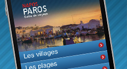
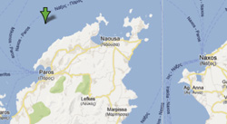

votre voyage en grèce
news
Notre WebApp !

Vous pouvez désormais télécharger
notre WebApp depuis votre mobile ou
tablette. Connectez-vous depuis votre
mobile ou tablette à l'url de notre site,
puis ajoutez-la à votre écran d'accueil.
Cliquez enfin sur l'icône de votre
bureau, et évadez-vous !
www.greeka.com
SITUER PAROS
Au centre des cyclades

Paros (en grec ancien et en grec
moderne ...) est une île de la mer
Égée et un dème de Grèce. Elle se
trouve à l'ouest de Naxos dans
l'archipel des Cyclades dont elle est la
troisième plus grande île par sa
superficie ainsi que principal carrefour
maritime. Parikiá est la plus grande ville et le port principal de l'île.
En savoir plus
FAIRE DU KITE
Le club de Paros
- Cours : Tous niveaux
- Matériel : Vente et location
- Hébergement : Formule studio + kite
www.paroskite.gr